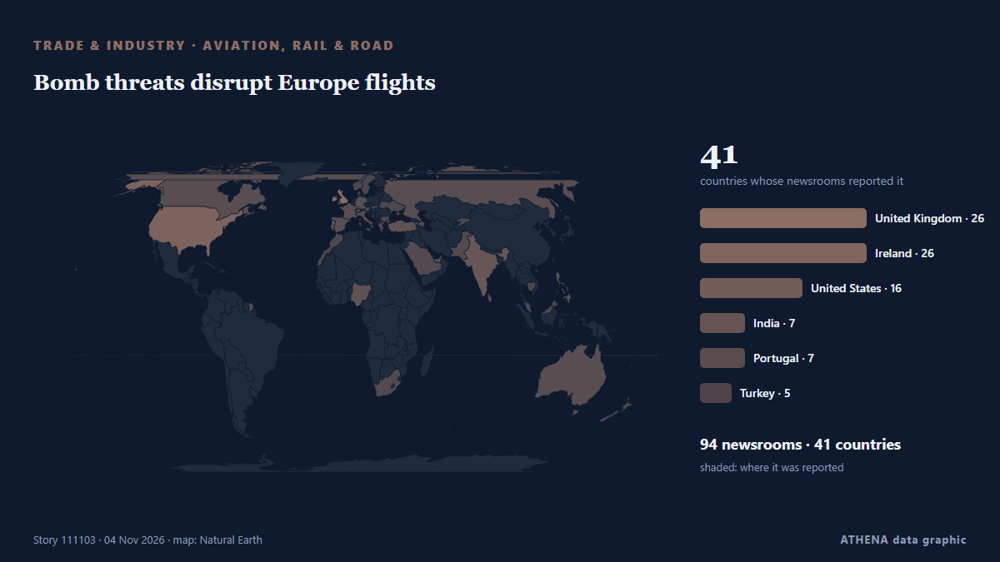

Bomb threats disrupt Europe flights

Αναφέρθηκε ανεξάρτητα από 96 μέσα σε 42 χώρες από τις 2 Νοε, πρώτο το Rappler· η κάλυψη εξαπλώνεται ακόμη. Το ATHENA εκτιμά τον κίνδυνο αυξημένο (4.4/10), κυρίως λόγω της σοβαρότητάς του και της εμβέλειάς του. Βεβαιότητα 88% (υψηλή): το επιβεβαιώνουν 96 ανεξάρτητα μέσα, μέση αξιοπιστία 71%. Μέσα ανά χώρα: Ηνωμένες Πολιτείες (6), Ηνωμένο Βασίλειο (4), Πορτογαλία (4). Κάλυψη: 2 Νοε έως 2 Νοε, 18 ώρες.
Γιατί έχει σημασία: Οι διαταραχές στο εμπόριο, τη βιομηχανία ή τις υποδομές διαδίδονται στις αλυσίδες εφοδιασμού και αλλάζουν κόστη και χρόνους παράδοσης μακριά.
Τι άλλαξε: 5 νέες αναφορές από 5 μέσα στο 24ωρο έως 5 Νοε.
Πρώτη διατύπωση: Manchester Airport flight LIVE as Ryanair plane lands in Spain after bomb threat
Οι τίτλοι των ειδήσεων παρουσιάζονται στα αγγλικά, όπως δημοσιεύτηκαν.
Με μια ματιά
Επιλέγεται, βαθμολογείται και γράφεται από τη δημοσιευμένη μεθοδολογία του ATHENA. Κανένας συντάκτης δεν παρεμβαίνει σε μεμονωμένα γεγονότα. Πώς παράγεται ›
| 02 Nov 01:20 UTC | 3 |
|---|---|
| 02 Nov 04:20 UTC | 4 |
| 02 Nov 07:20 UTC | 5 |
| 02 Nov 10:20 UTC | 11 |
| 02 Nov 13:20 UTC | 9 |
| 02 Nov 16:20 UTC | 6 |
| 02 Nov 19:20 UTC | 6 |
| 02 Nov 22:20 UTC | 2 |
| 03 Nov 01:20 UTC | 2 |
| 03 Nov 04:20 UTC | 0 |
| 03 Nov 07:20 UTC | 13 |
| 03 Nov 10:20 UTC | 19 |
| 03 Nov 13:20 UTC | 39 |
| 03 Nov 16:20 UTC | 26 |
| 03 Nov 19:20 UTC | 7 |
| 03 Nov 22:20 UTC | 0 |
| 04 Nov 01:20 UTC | 0 |
| 04 Nov 04:20 UTC | 1 |
| 04 Nov 07:20 UTC | 0 |
| 04 Nov 10:20 UTC | 1 |
| 04 Nov 13:20 UTC | 0 |
| 04 Nov 16:20 UTC | 0 |
| 04 Nov 19:20 UTC | 0 |
| 04 Nov 22:20 UTC | 0 |
| 05 Nov 01:20 UTC | 0 |
| 05 Nov 04:20 UTC | 0 |
| 05 Nov 07:20 UTC | 1 |
| 05 Nov 10:20 UTC | 3 |
| 03 Nov 13:04 UTC | 0.0 |
|---|---|
| 03 Nov 14:41 UTC | 2.0 |
| 03 Nov 14:56 UTC | 2.6 |
| 03 Nov 15:15 UTC | 3.8 |
| 03 Nov 18:09 UTC | 3.5 |
| 03 Nov 20:45 UTC | 3.8 |
| 03 Nov 21:35 UTC | 4.8 |
| 04 Nov 06:34 UTC | 4.1 |
| 05 Nov 11:23 UTC | 4.4 |
Γιατί αυτοί οι αριθμοί
Σημασία
Κίνδυνος
Βεβαιότητα
Η κάλυψη — ποιος το ανέφερε και πότε
ο τίτλος όπως δημοσιεύτηκε · ανοίγει το πρωτότυπο- Rappler · ΦιλιππίνεςLIST: Flights canceled, rescheduled due to ASEAN November 2026 summit
- Simple Flying · Ηνωμένες Πολιτείες5 Items Cabin Crew Ask Passengers To Stow Away First Before Takeoff On Long-Haul Flights
- Chronicle Live (Newcastle) · Ηνωμένο ΒασίλειοTUI flight bound for Newcastle Airport declares mid air 'emergency' at 17,900ft
- Daily Tribune · ΦιλιππίνεςMakati bans drone flights ahead of ASEAN Summit
- Irish Independent · Ιρλανδία‘We’ll need to split up the family’ – more than 40 parents affected as TU Dublin campus crèche announces closure
- 24.kg (English) · ΚιργιστάνFlights from Bishkek to Sharm el-Sheikh canceled for winter season
- NEWS.am (English) · ΑρμενίαNo daytime flights at Yerevan’s Zvartnots Airport from November 2 to 7
- The Hindu · ΙνδίαFour flights bound for Kathmandu, Varanasi diverted to Lucknow due to adverse weather
- Hindustan Times · Ινδία‘Flight was unsafe’: DMK MP P Wilson alleges engine failure, seeks DGCA review
- Ada Derana · Σρι ΛάνκαSmoke scare on Melbourne–Colombo flight traced to dry ice, official says
- Yale E360 · Ηνωμένες ΠολιτείεςTo Deter Seals, Tasmanian Salmon Farmers Have Set Off 1,800 Bombs This Year
- Yale E360 · Ηνωμένες ΠολιτείεςBomb Fishing Is Wreaking Havoc on Indonesia's Coral Reefs
- The Hindu · ΙνδίαThane, Hingoli courts receive bomb threat emails; nothing suspicious found
- The Portugal News · ΠορτογαλίαThree-hour flight, three-hour airport wait? Brits spark online debate on Faro Airport
- Ada Derana · Σρι ΛάνκαProbe launched following smoke warning on SriLankan Airlines flight
- Daily Mirror · Σρι ΛάνκαMelbourne-Colombo SriLankan flight makes emergency landing at BIA
- Irish Mirror · ΙρλανδίαBritish Airways Majorca flight in sudden U-turn with emergency crews on standby
- Irish Independent · ΙρλανδίαWhat’s on in November in Dublin: Wild Lights return to Dublin Zoo and an extinct elk comes back to life
- Simple Flying · Ηνωμένες ΠολιτείεςHow Many Crew Members Does It Take To Fly An SR-71 Blackbird?
- RUSI · Ηνωμένο ΒασίλειοFentanyl in Italy and the European Opioid Market
- The Portugal News · ΠορτογαλίαTAP launches direct flights from Portugal to USA
- BusinessWorld · ΦιλιππίνεςThe hope of the nation is going up in vape smoke
- Ports Europe · EURItaly’s planned state port company could take stakes in foreign ports, Rixi says
- France 24 English · ΓαλλίαItalian journalists under police protection as threats rise across the country
- Simple Flying · Ηνωμένες ΠολιτείεςNearly 2,000 Boeing 737s Must Get Tail Inspections After Jets Pitched Up And Down Mid-Flight
- Business Insider · Ηνωμένες Πολιτείες'If we can annoy him again, so much the better': Ryanair's CEO poured fuel on the fire of his beef with Elon Musk
- ReliefWeb (UN OCHA) · INTIEDs disguised as rocks, bricks and thermos flasks pose new threat to civilians in Yemen
- The Slovak Spectator · ΣλοβακίαBratislava Airport has a record number of routes. New flights serve Morocco and Azerbaijan
- The Portugal News · ΠορτογαλίαNew direct flights between Lisbon and Prague
- The Jerusalem Post · ΙσραήλRetired US Air Force officer Rick Francona discusses Kurds, Iranian threat with 'Post' - interview
- TASS (English) · ΡωσίαNATO spy plane spends over four hours near Russia’s westernmost region
- Phys.org · Ηνωμένο ΒασίλειοWhy birds speed up to slow down: The physics of landing
- BIS central bankers' speeches · ΕλβετίαSavings in a changing society
- Khmer Times · ΚαμπότζηGovt vows to tackle explosive threats amid border row
- The National · Ηνωμένα Αραβικά ΕμιράταBombs hidden in bricks and flasks make crossing Yemen ever more perilous
- Sydney Morning Herald · ΑυστραλίαDisrupter on flights to Europe offers value business class, great service
- Al Jazeera English · ΚατάρGerman unions launch wave of strikes over cost-of-living pressures
- The Portugal News · ΠορτογαλίαTAP flight makes emergency landing in France due to smoking e-cigarette
- Bristol Post · Ηνωμένο ΒασίλειοBristol Beacon evacuated after 'hoax' threat
- RNZ Pacific · PACUS Air Force plans expanded training at Northern Marianas airports